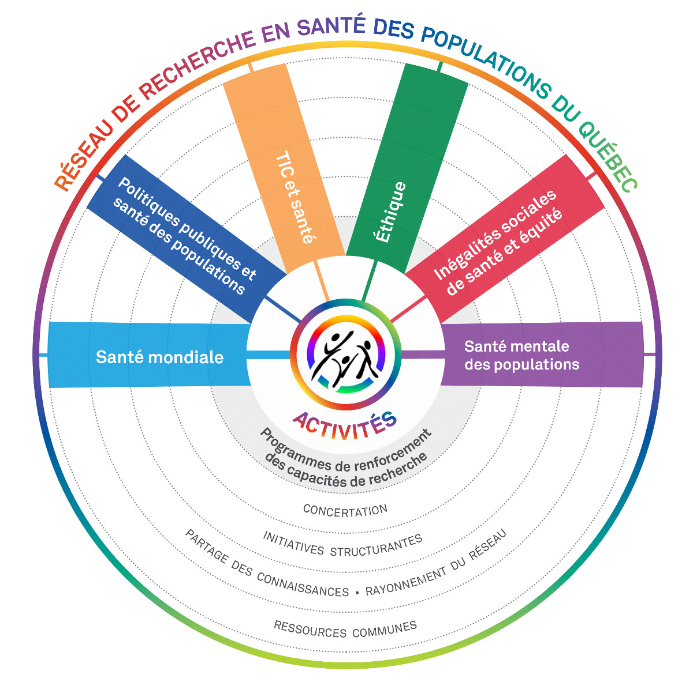

Mission, structure and governance
Created in 2002 and funded by the Fonds de recherche du Québec - Santé (FRQS), the Quebec Population Health Research Network (QPHRN/RRSPQ) gathers researchers (around 6 thematic axes -or Strategic Groupings) working in public and population health, health services, and health policy. Their efforts aims to identify, understand and act on social determinants of health. The QPHRN aims at optimizing the use and application of population health research results in policy and practice towards improving the healthcare system and population health. To this end, the QPHRN aims to support innovative research initiatives that are centered on the integration of knowledge into practice and policy and involve interdisciplinary, interinstitutional and cross-sectoral collaborations. In order to have an actual impact, the QPHRN also recognizes the importance that research consider and address the principles of equity, inclusion and diversity in practice and policy. Another QPHRN’s key objective is to strengthen population health research capacity in Quebec. To this end, the network recognizes the importance of assisting young researchers to acquire the necessary knowledge and skills for conducting independent research and to develop a competitive research profile.
6 Axes (formerly Strategic Groupings) - 6 Networks of interdisciplinary researchers
The RRSPQ identifies six priority areas to strengthen the field of population health. The Network makes them its Strategic Groupings (SG). By focusing on methodology themes, the Network intends to complement existing research groups, which have a health populations component . The Network succeeds in reaching and mobilizing researchers from humanities and social sciences which are less implicated directly in health research.
- Information and Technologies Communication (ICT) and Health
- Social Inequalities of Health and Equity
- Population Mental Health
- Public Policy and Population Health
- Global Health
- Ethics
Two research capacity strengthening programs
- Strengthening intervention research capacity
- GHR-CAPS

Objectives
-
Increase research capacity in population health:
- Facilitate and encourage the scientific research and interdisciplinary collaboration;
- Encourage networking between researchers from different disciplines and institutions;
- Support the relief by training programs.
-
To support organizational initiatives, such as:
- The creation of longitudinal databases;
- The development of partnerships to facilitate access to databases and their exploitation
-
Promote the sharing and use of knowledge:
- Encourage and facilitate interaction between researchers, public policy makers, managers, central and regional as well as local stakeholders.
Guiding Principles
- Aim for the highest scientific quality;
- Develop projects that focus on methodological approaches rather than specific content (eg, cancer, cardiovascular, etc.).
- Focus, through contests, research projects and transverse coherent with its guiding principles;
- Support of actions conducive to health research in Quebec populations,
- Encourage the creation of inter-institutional and multidisciplinary teams;
- Encourage partnerships;
- Enhance the expertise, experience and leadership of Quebec researchers;
- Develop infrastructure accessible to the greatest number of researchers in Quebec;
- Promote ethical and theoretical reflection;
- Develop the sake of knowledge use by decision makers, practitioners and the public;
- Focus, through its competition projects, the achievement of the objectives of the network;
- Manage the network in a transparent and open.